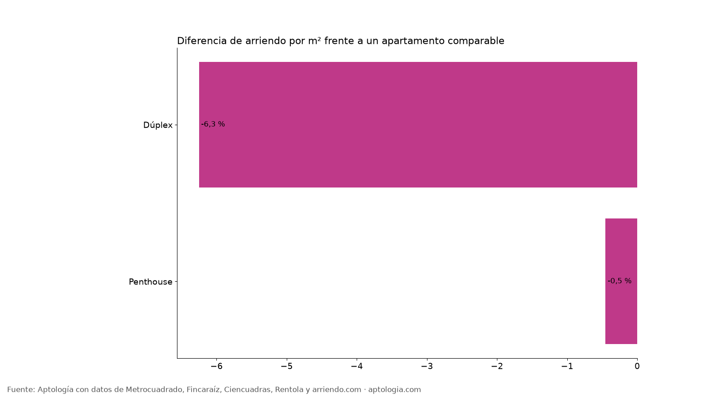
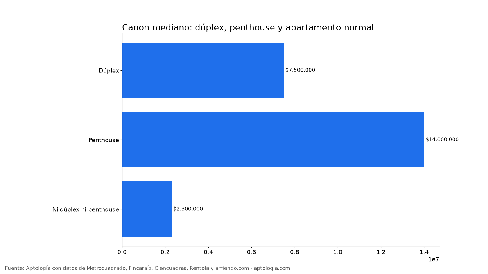

Dúplex y penthouse en arriendo en Bogotá: cuánto más cuestan que un apartamento normal (2026)
Estudio con datos abiertos (CC BY 4.0). Versión original: https://www.aptologia.com/estudios/duplex-y-penthouse-arriendo-bogota · DOI: 10.5281/zenodo.23349688
En Bogotá, un penthouse en arriendo cuesta 0,5 % menos por m² que un apartamento comparable y un dúplex 6,3 % menos. El canon mediano es $14.000.000 para un penthouse, $7.500.000 para un dúplex y $2.300.000 para el resto.
Resumen: analizamos 18.920 apartamentos en arriendo únicos en Bogotá con descripción, 745 dúplex y 359 penthouse.
Actualizado: 13 de octubre de 2026 · Próxima actualización: mensual.

Dúplex y penthouse
| Tipo | Avisos | % de avisos | Canon mediano | Área mediana | Por m² | Diferencia por m² (comparable) |
|---|---|---|---|---|---|---|
| Dúplex | 745 | 3,9 % | $7.500.000 | 136 m² | $49.405/m² | -6,3 % |
| Penthouse | 359 | 1,9 % | $14.000.000 | 255 m² | $55.114/m² | -0,5 % |
| Ni dúplex ni penthouse | 17.816 | 94,2 % | $2.300.000 | 56 m² | $47.500/m² | base |

Cómo usarlo para decidir: el dúplex da más área y separación entre zona social y alcobas; el penthouse suma terraza y vista. Compara su precio por m² con el de un apartamento normal del mismo estrato antes de pagar la diferencia.
Preguntas frecuentes
¿Cuánto más cuesta un penthouse en arriendo en Bogotá? -0,5 % por m² frente a un apartamento comparable; canon mediano $14.000.000, corte al 13 de octubre de 2026.
¿Cuánto cuesta un dúplex en arriendo en Bogotá? La mediana es $7.500.000 al mes, con 136 m².
Metodología
- Fuente: base de ingesta diaria de Aptología, con avisos públicos de Metrocuadrado, Fincaraíz, Ciencuadras, Rentola y arriendo.com. Corte al 13 de octubre de 2026.
- Filtros: avisos vivos que pasan el control de calidad, en Bogotá, canon entre $400.000 y $30.000.000. Se excluyen TikTok y Facebook Marketplace.
- Duplicados: se deja un aviso por grupo de duplicados (el mismo inmueble en varios portales).
- Prima emparejada: se compara el precio por m² de avisos con y sin el atributo dentro de la misma celda de estrato × habitaciones (mínimo 8 avisos por lado) y se reporta la mediana ponderada de las diferencias. Así la prima no se confunde con estrato o tamaño. El atributo se detecta en el texto del aviso, por lo que solo cuentan avisos con descripción. Dúplex y penthouse se detectan en el texto del aviso; si un aviso menciona ambos, cuenta como penthouse.
- Limitaciones: son precios pedidos, no cerrados. Los barrios y localidades vienen tal como los escribe cada portal.
- Datos abiertos: datos.csv, licencia CC BY 4.0.
Cómo citar
Pinzón Pineda, D. M. (2026). Dúplex y penthouse en arriendo en Bogotá: cuánto más cuestan que un apartamento normal (2026). Aptología. https://www.aptologia.com/estudios/duplex-y-penthouse-arriendo-bogota. Datos: datos.csv, licencia CC BY 4.0.